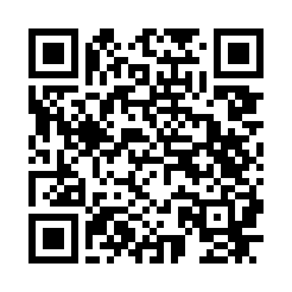

ÖLYCKESKOLAN
Vad blir det
till lunch?
Veckans matsedel direkt i mobilen

- Skanna QR-koden med mobilens kamera.
- Öppna länken till matsedeln.
- Lägg till på hemskärmen – så finns den alltid nära.
iPhone / iPad: Öppna i Safari → Dela → Lägg till på hemskärmen.
Android: Öppna i Chrome → ⋮ → Lägg till på startskärmen / Installera app.
thomasc900.github.io/lararverktyg/matsedel/